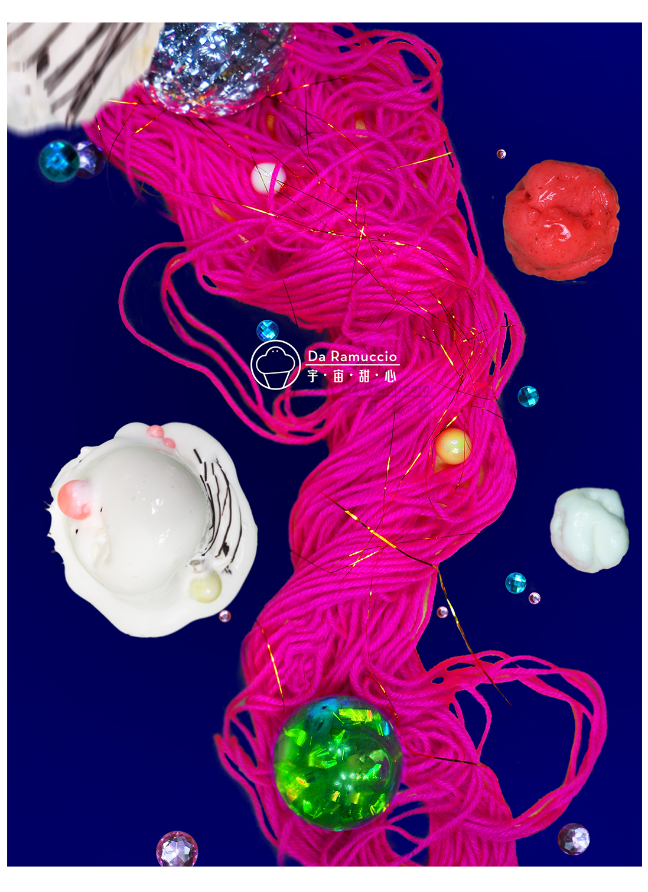
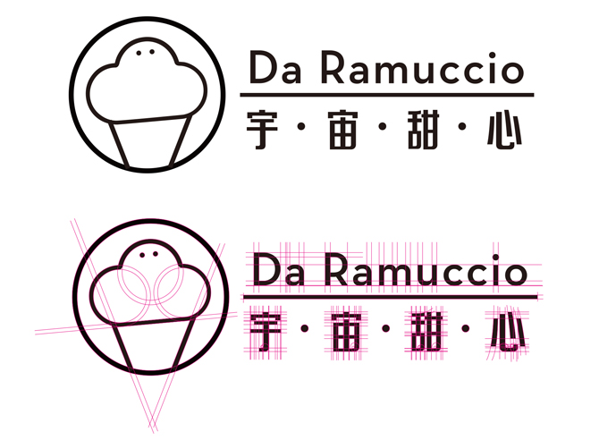
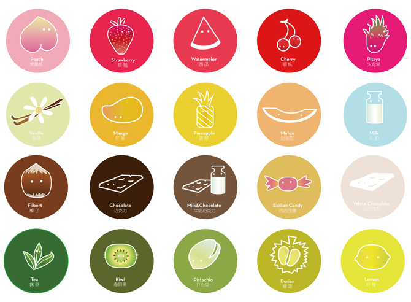
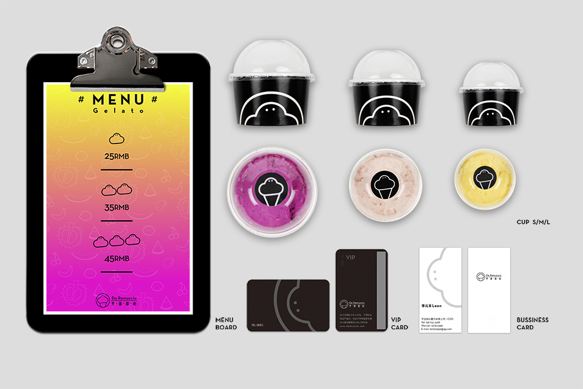
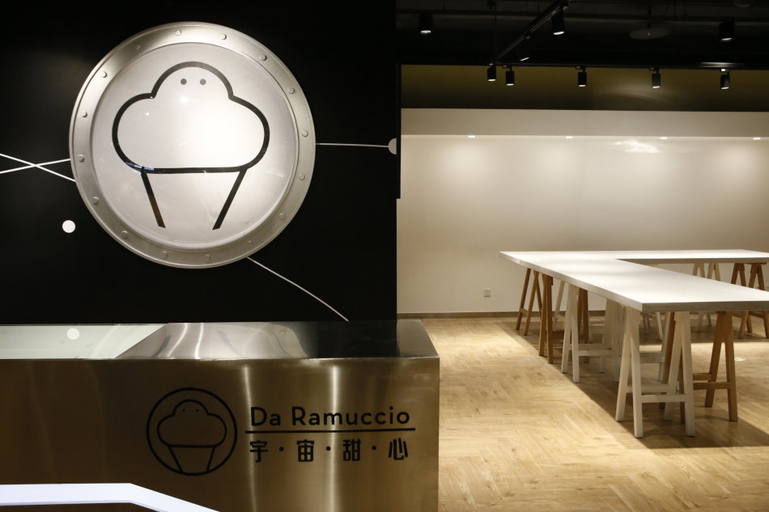
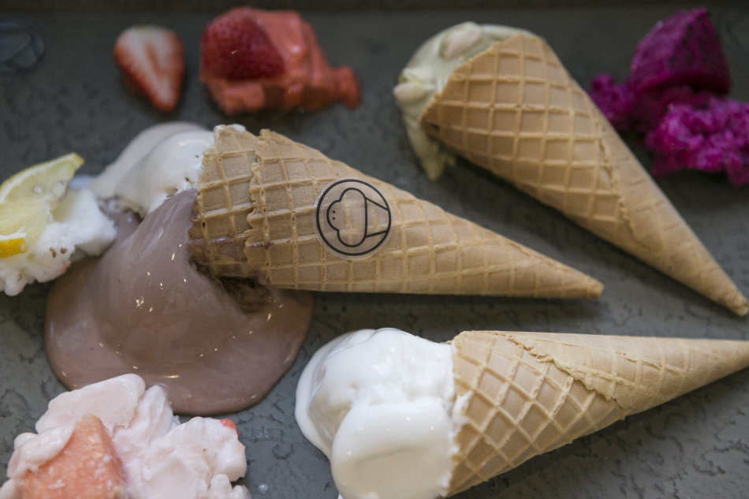

//// Da Ramuccio ////








* brand design
* keywords: ice cream brand
* 2015
This ice cream brand is come from Italy. And the ice cream maker always wear a cute hat with a circle glasses. We decide to use this character to make this new logo. We use the outline of the ice cream and adjust the patten to fit the new look of this brand.
- Created By Cherrie Jiang -
- 09 / 2016 -